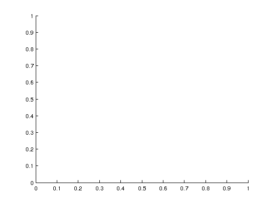

WiNetSim
Wireless Network Simulator \n
Copyright (C) 2016 IIT Hyderabad \n
This program is free software: you can redistribute it and/or modify
it under the terms of the GNU General Public License as published by
the Free Software Foundation, either version 3 of the License, or any later version.
This program is distributed in the hope that it will be useful, but
WITHOUT ANY WARRANTY; without even the implied warranty of
MERCHANTABILITY or FITNESS FOR A PARTICULAR PURPOSE. See the GNU
General Public License for more details.
You should have received a copy of the GNU General Public License
along with this program. If not, see <http://www.gnu.org/licenses/>.
Contact Information
WiNetSim Admin : sreekanth@iith.ac.in
Address : comm-lab, IIT Hyderabad
Contents
Parameters
constants
Tem = 290;
k = 1.3806488*10^-23;
NF=10^.7;
B_wifi = 20e6/64;
Noise = k*Tem*B_wifi*NF;
parameter.Noise=Noise;
DCF Parameters
wifi_slot=9;
parameter.wifi_slot=wifi_slot;
DIFS_time=34;
parameter.DIFS_time=DIFS_time;
CW_min=16;
parameter.CW_min=CW_min;
CW_max=1024;
parameter.CW_max=CW_max;
MAX_TX_OP_us = 4e3;
parameter.MAX_TXOP=MAX_TX_OP_us;
BW = 20;
fc=5;
parameter.fc=fc;
Tx_power_dbm = 18;
parameter.Pt_AP=10^(0.1*(Tx_power_dbm-30-10*log10(56)));
parameter.channel_model = 'InH';
if(BW==20)
WIFI_data_20us = round([130,260,390,520,780,1040,1170,1300,1560]);
elseif(BW==40)
end
parameter.WIFI_data_20us= WIFI_data_20us;
height_AP = 0;
height_STA = 0;
parameter.height_AP=height_AP;
parameter.height_STA=height_STA;
DL_percent = 1/(1+DL_UL);
UL_percent = 1/(1+(1/DL_UL));
load_per_user_dl = DL_percent*(Network_load_Mbps/(file_size*(NCell*n_AP*n_STA)))*1e-6;
load_per_user_ul = UL_percent*(Network_load_Mbps/(file_size*(NCell*n_AP*n_STA)))*1e-6;
parameter.load_per_user_dl=load_per_user_dl;
parameter.load_per_user_ul=load_per_user_ul;
if(1)
figure;
graph=gca;
end
